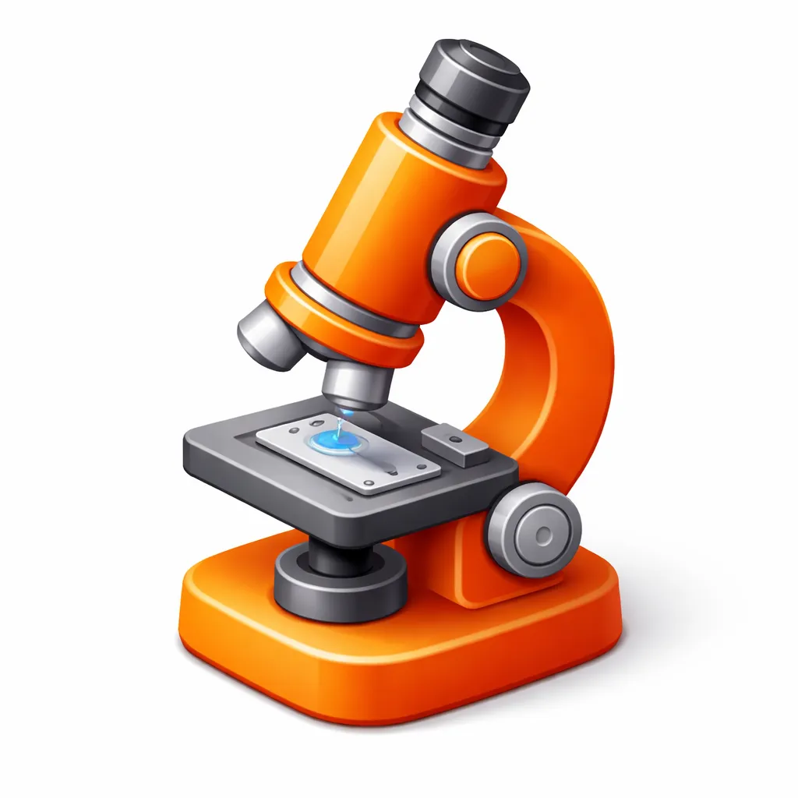
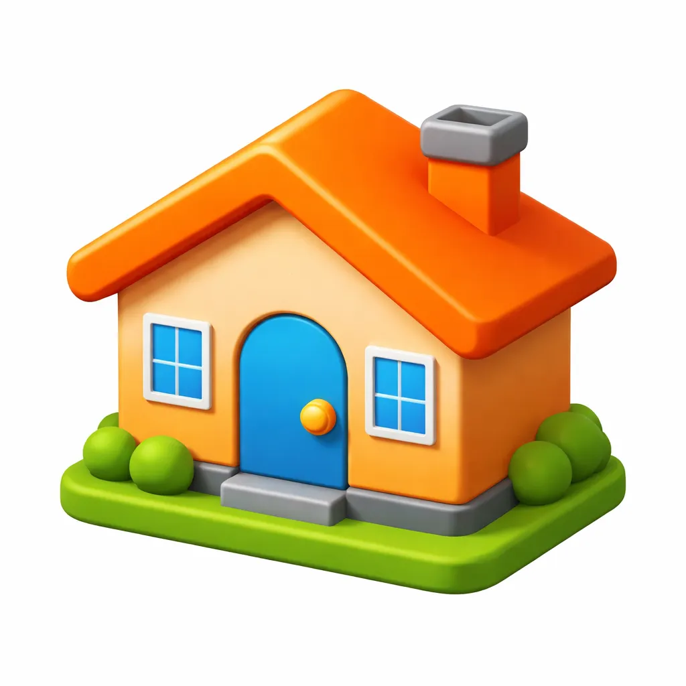
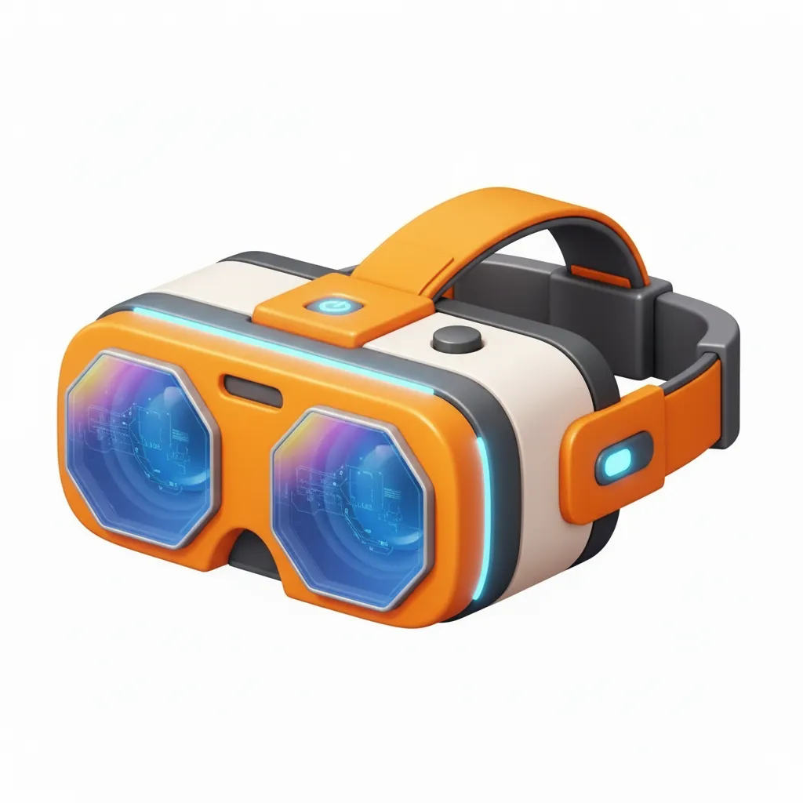
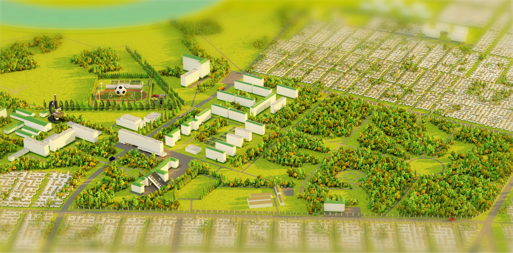

новая глава современного образования
Фундаментальная теория, инновационная практика, частые стажировки на современных предприятиях и перспективы работы в приоритетном секторе экономики.
Статус инженера после выпуска и работа со значимыми проектами: созданием физической, цифровой, механической и коммуникационной инфраструктуры. Приятный бонус для самых мотивированных: практики и стажировки с присвоением квалификаций во время обучения.
Центр подготовки стратегов бизнеса и государства! В едином образовательном пространстве мы собрали мощный педагогический состав и самые современные программы, в том числе — в соавторстве с ведущими вузами страны. Цифровое обучение и семестры по обмену, стажировки в главных институтах власти и финансов, практика в ведущих компаниях: всё это здесь, в КУБГАУ.
Кубанский ГАУ — это современный аграрный и универсальный университет. На единой территории 168 га расположено сразу всё, что нужно для всестороннего развития и комфортной жизни: учебно-лабораторные корпуса, общежития, научные и культурные центры, спортивный комплекс, коворкинги, прогулочный парк — Ботанический сад им. И.С. Косенко. За пределами кампуса — Учебные хозяйства и виноградники.
15 факультетов и 2 Института в пешей доступности от общежитий

22 корпуса: современные лаборатории, исследовательские центры и хозяйства для практики
Футбольное поле, бассейн, скалодром, крытый комплекс, теннисные корты и площадки для воркаута
44 студии для развития творческого потенциала студентов из разных стран

20 общежитий, комбинат питания, поликлиника, спортивные площадки

Cоздали функциональную лабораторию цифрового контента, открыли подкаст-студии и киберклуб

Центр дополнительного образования — структурное подразделение Кубанского государственного аграрного университета. Это мощная образовательная база для действующих студентов, преподавателей, школьников старших классов, профильных специалистов и всех, кто мечтает получить новую профессию или усилить себя в действующей
А если остались вопросы, мы с удовольствием всё объясним и подробно расскажем: хоть лично, хоть по телефону или в мессенджере